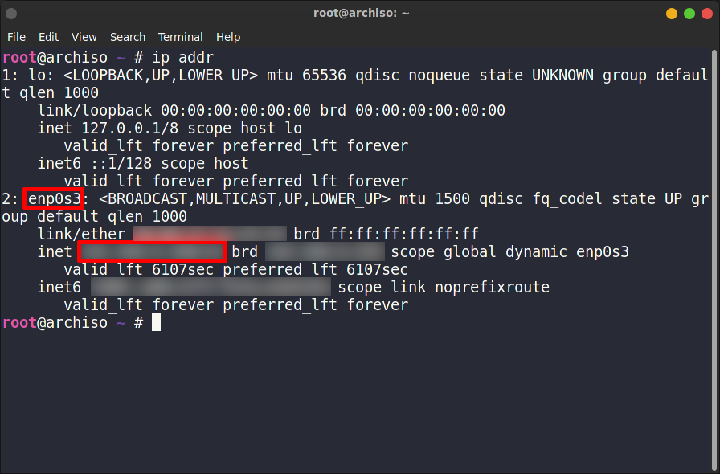
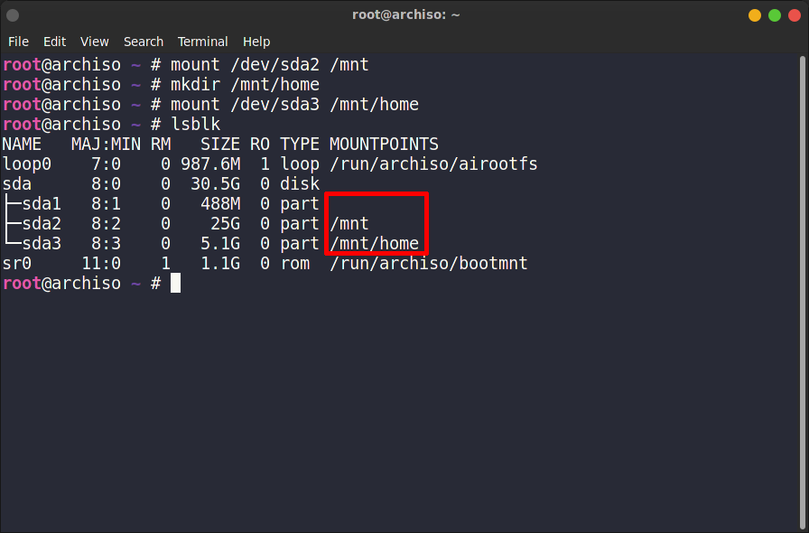
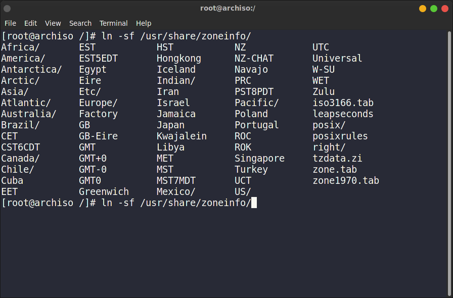
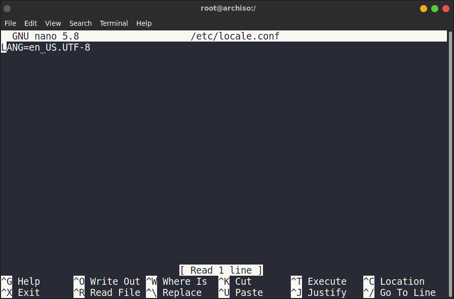

- legacy of uefi?
- downloading the iso
- network connection
- time synchronization
- creating partitions
- mounting partitions
- installing the system
- generating fstab file
- changing root to the installed system
- setting the time zone
- setting local time
- setting locale
- setting hostname
- enabling network
- setting root passwd
- grub installation
- reboot the system
This Arch Linux installation guide will use the UEFI mode, but the legacy mode will also be covered by pointing out the differences where it is needed. So, regardless of what mode you choose, your Arch Linux base installation will most likely get covered.
When the ISO is downloaded, you need to check its signature to make sure it has not been compromised:
gpg --keyserver-options auto-key-retrieve --verify /path/to/archlinux.iso.sig
If you see "Good signature from …", this means you are good to go.
Before moving further, I would suggest to try the whole installation process in virtualbox. Since it is a command line installation, typo can happen and you will end with a broken installation. Even worse, you may lose you data. So practice first and once you get your feet wet, you may proceed to install it in your daily drive.
ping -c 5 gnu.org
If you are not sure what interfaces are available, use
ip addr

timedatectl set-ntp true
Check the time:
timedatectl status
There are many command line installer out there. Here we will use cfdisk because it is a little user friendly. First of all, check list all the available disks and partitions.
lsblk
Now point out the partition where you want to install the system. Run this command to create a new partition table:
cfdisk /dev/sda
Creating a new partition table will erase everything from a drive. So back up all your data.
In the label type window, select gpt.

legacy mode: In case of legacy installation, choose the dos partition type and do not create the UEFI partition.
Use the arrow keys and Enter to create 3 partitions:
- /dev/sda1 # choose 512MB of space (UEFI)
- /dev/sda2 # choose at least 10 GB of space (root)
- /dev/sda3 # choose all the left space (home)
lsblk
Once the partitions are created, it's time to format them.
The first partition is the UEFI partition. It needs to be formatted with a FAT file system:
mkfs.fat -F32 /dev/sda1
legacy mode: In case of legacy installation, skip the step. You shouldn't have this partition.
The other two partitions need to be formatted with a EXT4 file system (Other Linux systems will also work but EXT4 is always recommended):
mkfs.ext4 /dev/sda2
mkfs.ext4 /dev/sda3
mkfs.ext4 /dev/sda3
mount /dev/sda2 /mnt
Create a folder to mount the home partition and mount it:
mkdir /mnt/home
mount /dev/sda3 /mnt/home
List the partitons to check mounting points:
mount /dev/sda3 /mnt/home
lsblk
Note, the root mounting point is the folder where the system will
be installed. The home mounting point partition is where you will
put all of your personal data.

pacstrap -i /mnt base base-devel linux-lts linux-lts-headers linux-firmware sudo nano
When the system requests to choose the components to install, select all and yes. Wait some time until it completes.
package description in short:
| package | description |
|---|---|
| base | meta package of essential programs for basic installation |
| base-devel | additional packages for base installation |
| linux-lts | Linux kernel (Long Time Support version) |
| linux-lts-headers | header files for the kernel |
| linux-firmware | additional modules for the kernel |
| sudo | package for granting user privileges |
| nano | command line based text editor |
genfstab -U -p /mnt >> /mnt/etc/fstab
arch-chroot /mnt /bin/bash
Now you accessed the system as a root user. A bit later, you will also add the regular user.
ln -sf /usr/share/zoneinfo/
and then press the Tab key to see the available regions. In my case, I need to choose Asia. Again, you
can press the Tab key, and you will see all the available cities. I will use Dhaka.
 Save this link to /etc/localtime. The final command will look as follows:
ln -sf /usr/share/zoneinfo/Asia/Dhaka /etc/localtime
Instead of Asia and Dhaka, select your own region and city for time zone.
hwclock --systohc
Now, check the time:
date
If the time is incorrect, go back and make sure you have set the timezone correctly.
nano /etc/locale.gen
Find the language you are going to use. In my case, I am going to install American English. Activate the search option by
pressing the shortcut Ctrl + W and type #en_US.
Press Enter .
You should jump to the line #en_US.UTF-8 UTF-8. Uncomment it by removing the # sign. Press Ctrl + O Enter to save and Ctrl + X . Enter to exit the editor.
Next, you have to generate the locale. Run:
locale-gen
And create the locale.conf with corresponding language settings:
echo "LANG=en_US.UTF-8" > /etc/locale.conf

echo archy > /etc/hostname
You also need to edit the /etc/hosts file. Type:
nano /etc/hosts
Then press Enter .
add this line at the end of the file:
127.0.0.1 localhost
::1 localhost
127.0.1.1 archy.localdomain archy
Press Ctrl + O Enter to save and Ctrl +
X . Enter to exit the editor.
::1 localhost
127.0.1.1 archy.localdomain archy
pacman -S networkmanager
Then enable it:
systemctl enable --now NetworkManager
Now, the computer will be able to connect to the Internet automatically. Remember, these settings
work only for the wired internet connection.
passwd
and type your password twice. Be attentive, as you will see nothing while typing.
pacman -S grub efibootmgr dosfstools os-prober mtools
package description in short:
| package | description |
|---|---|
| grub | user-friendly boot loader |
| efibootmgr | boot manager for uefi installation |
| dosfstools | package that includes the mkfs.fat and fsck.fat utilities |
| os-prober | package for detecting other existing OSs at boot time |
| mtools | collection of utilities for accessing MS-DOS disks from GNU |
mkdir /boot/efi
mount /dev/sda1 /boot/efi
lsblk # to check whether everything has been mounted properly
grub-install --target=x86_64-efi --bootloader-id=arch_uefi --efi-directory=/boot/efi --recheck
grub-mkconfig -o /boot/grub/grub.cfg
mount /dev/sda1 /boot/efi
lsblk # to check whether everything has been mounted properly
grub-install --target=x86_64-efi --bootloader-id=arch_uefi --efi-directory=/boot/efi --recheck
grub-mkconfig -o /boot/grub/grub.cfg
legacy mode: In case of legacy installation, install GRUB this way:
pacman -S grub
grub-install /dev/sda
grub-mkconfig -o /boot/grub/grub.cfg
grub-install /dev/sda
grub-mkconfig -o /boot/grub/grub.cfg
exit
umount -R /mnt
reboot
you will see the GRUB welcome screen with Arch Linux installed. To continue, log in as a root user with a previously set password.
Here we have covered the very basic Arch Linux installation. However, it is very bare minimum and not usable yet. In the next session,
we will create our first non-root user and install a desktop environment. Until then, enjoy.
umount -R /mnt
reboot